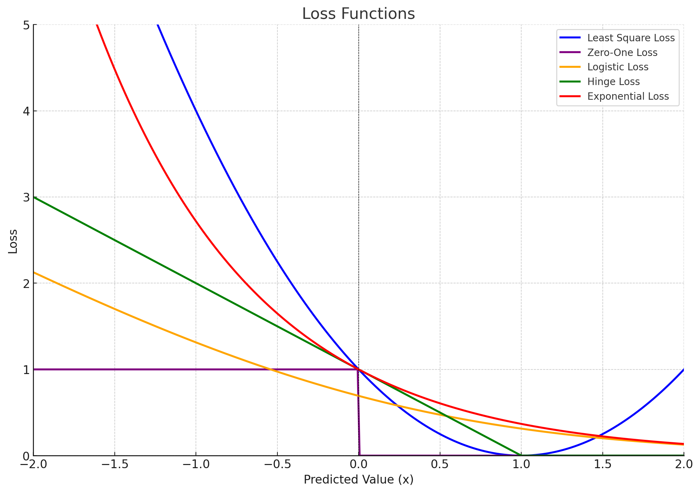
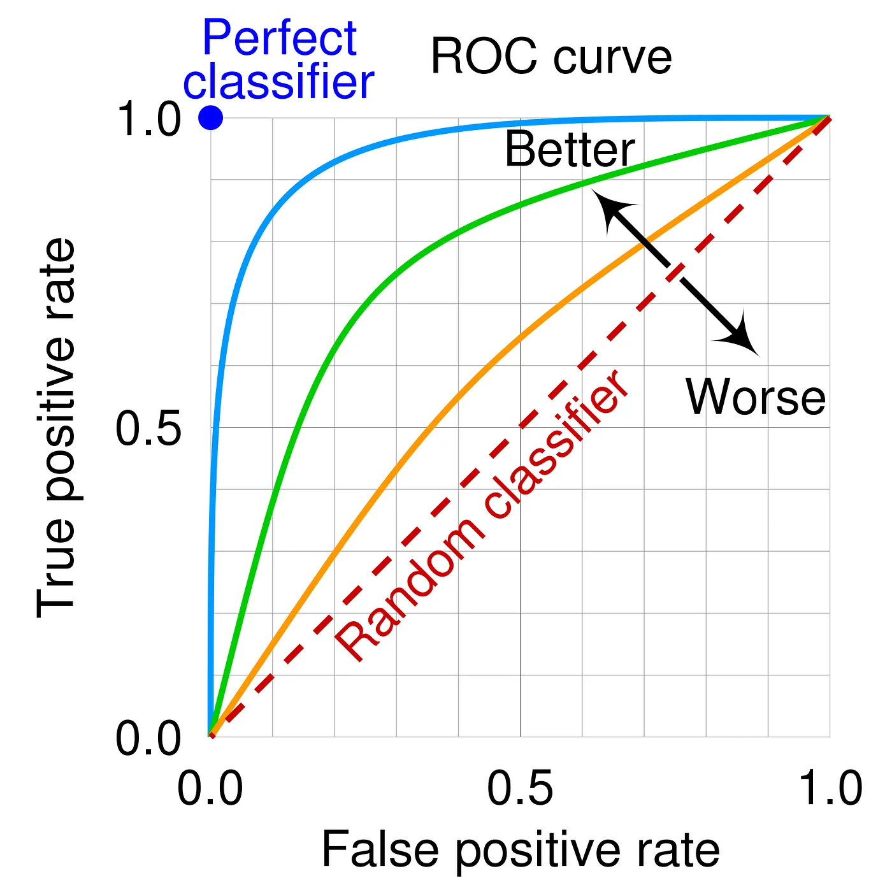

Part 1: Basic Concepts
Table of Contents
Bias-Variance Tradeoff

Decomposition of Expected Test Error:
$$
\begin{align*}
\underbrace{\mathbb{E}_{x, y, D} \left[ \left( h_D(x) - y \right)^2 \right]}_{\text{Expected Test Error}}
&= \underbrace{\mathbb{E}_{x, D} \left[ \left( h_D(x) - \bar{h}(x) \right)^2 \right]}_{\text{Variance}}
+ \underbrace{\mathbb{E}_{x, y} \left[ \left( \bar{y}(x) - y \right)^2 \right]}_{\text{Noise}}
+ \underbrace{\mathbb{E}_x \left[ \left( \bar{h}(x) - \bar{y}(x) \right)^2 \right]}_{\text{Bias}^2}
\end{align*}
$$
- Variance: How "over-specialized" (overfitting) is your classifier to a particular training set?
- Bias: What is the inherent error that you obtain from your classifier even with infinite training data?
- Noise: How big is the data-intrinsic noise?
Underfitting vs. Overfitting

| Characteristic |
Overfitting |
Underfitting |
| Training Error |
Low |
High |
| Validation/Test Error |
High |
High |
| Model Complexity |
Too complex |
Too simple |
| Generalization |
Poor |
Poor |
| Bias vs. Variance |
Low bias, high variance |
High bias, low variance |
Cross-Validation
Fixing High Bias (Underfitting)
- Increase Model Complexity
- Decrease Regularization
- Add Features
- Increase Training Time
- Use Non-linear Models
Fixing High Variance (Overfitting)
- Decrease Model Complexity
- Increase Regularization
- Reduce Feature Space
- Increase Training Data
- Use Early Stopping
- Use Ensemble Methods
Balance: Bias-Variance Tradeoff
The solution often lies in striking a balance between high bias and high variance. You can experiment iteratively with:
- Model selection: Trying different algorithms and architectures
- Hyperparameter tuning: Adjusting hyperparameters like learning rate, regularization strength, or model depth
- Feature engineering: Improving the input data to enhance model performance
Ensemble Methods
Pros & Cons
- (+) Improved accuracy/predictive performance
- (+) Improved robustness to overfitting and noisy data
- (+) Flexibility to use different types of models
- (-) Increased complexity (requires more computational resources)
- (-) Harder to interpret compared to a single model
1. Bagging (Bootstrap Aggregating)
- Combines bootstrapping with aggregation
- Bootstrapping is a statistical technique used to generate multiple datasets by randomly sampling (with replacement) from the original dataset
- Each bootstrapped dataset is the same size as the original dataset but may contain duplicate samples
- Reduces variance
2. Boosting
- Training weak learners sequentially to correct errors from the previous one
- Reduces bias
3. Stacking (Stacked Generalization)
- Improves predictive power by combining predictions from multiple models
- A meta-model is trained on the outputs of base models
Ensemble Algorithms
- Random Forest: Bagging applied to decision trees
- AdaBoost: Boosting algorithm that combines decision trees or stumps
- Gradient Boosting Machines (GBM): Sequential training to minimize loss
- XGBoost, LightGBM, CatBoost: Optimized implementations of gradient boosting with faster training and improved accuracy
Loss functions
Loss functions provide a mathematical framework to quantify the error between a model's predictions and the true labels.
-
$h_\theta(x)$: Predicted value (or raw model output, i.e. logits) for a given input $x$
- $h$: The hypothesis function (i.e., the model)
- $\theta$: Model parameters (e.g., weights, biases) learned during training
- $x$: Input features (a single data point or a feature vector)
-
$y$: True value (or ground truth) corresponding to the input $x$
Loss Functions for Classification

-
Least Square Loss: $(h_\theta(x) - y)^2$
- Smooth and differentiable
- Highly affected by outliers
-
Zero-One Loss: $1{h_\theta(x) \cdot y \leq 0}$
- Rarely used in practice; Non-smooth and difficult to optimize using gradient descent
- Least sensitive to outliers
-
Logistic Loss: $\log(1 + \exp(-h_\theta(x) \cdot y))$
- Smooth and differentiable, suitable for optimization using gradient descent
- Commonly used in logistic regression for binary classification when $y \in {-1, 1}$
- Operates on predicted score (logit) ($h_\theta(x)$) without applying an activation function
-
Hinge Loss: $\max{1 - h_\theta(x) \cdot y, 0}$
- Smooth and differentiable, suitable for optimization using gradient descent
- Commonly used for SVMs to maximize the margins
-
Exponential Loss: $\exp(-h_\theta(x) \cdot y)$
- Smooth and differentiable, suitable for optimization using gradient descent
- Commonly used in boosting algorithms like AdaBoost
-
Cross-Entropy Loss:
- Smooth and differentiable, suitable for optimization using gradient descent
- Operates on probabilities ($\hat{y}$), which are derived from the logits using an activation function (e.g., sigmoid or softmax)
- Used for both binary and multiclass classification
Loss Functions for Regression
-
Root Mean Square Error (RMSE): $RMSE = \sqrt{\frac{1}{n} \sum_{j=1}^n (y_i - \hat{y}_i)^2}$
- Gives higher weight to large errors, useful when large errors are particularly undesirable
-
Mean Absolute Error (MAE): $MAE = \frac{1}{n} \sum_{i=1}^n |y_i - \hat{y}_i|$
- Measures the average magnitude of errors without squaring
- Provides a steady metric unaffected by extreme values
-
RMSE vs. MAE:
- RMSE is always greater than or equal to MAE; If all errors are equal, RMSE = MAE
- MAE is easier to interpret
MLE vs. Loss Functions
- MLE (Maximum Likelihood Estimation) derives loss functions for probabilistic models by:
- maximizing the likelihood of the observed data
- minimizing the negative log-likelihood
- Loss functions are broader and can be used for tasks beyond probability models (e.g., regression, classification)
Batch Learning vs. Online Learning
-
Batch Learning:
- Learns from all the available training data at once
-
Online Learning:
- Learns gradually, processing one example (or a small batch) at a time as data becomes available
- Error-driven approach, where the model adjusts itself after each new example is received
- Examples
- Stock market prediction
- Email classification
- Recommendation systems
- Ad placement in a new market
- Algorithm
- Goal: Minimize the number of mistakes made by the model over time
- The process is iterative and works as follows:
- Receive an unlabeled instance $x^{(i)}$
- Predict the output $y' = h_\theta(x^{(i)})$
- Receive the true label $y^{(i)}$
- Suffer a loss if the prediction $y' \neq y^{(i)}$
- Update the parameters $\theta$ to reduce future mistakes
Confusion Matrix

|
Predicted Positive |
Predicted Negative |
| True Positive |
TP |
FN |
| True Negative |
FP |
TN |
-
Accuracy: $(TP + TN) / \text{all}$
- Measures how many cases (both positive and negative) are correctly classified
-
Recall (Sensitivity/True Positive Rate): $TP / (TP + FN)$
- Measures how many actual positive cases are correctly classified
- Sensitive to imbalanced data
-
Precision: $TP / (TP + FP)$
- Measures how many predicted positive cases are actually correct
|
|
|
| High Recall, Low Precision |
Many false positives but few false negatives |
Good for detection |
| Low Recall, High Precision |
Few false positives but many false negatives |
Good for trustworthiness |
-
F1 Score: $2 \cdot \frac{\text{recall } \cdot \text{ precision}}{\text{recall } + \text{ precision}}$
- Harmonic mean of recall and precision, useful for imbalanced datasets
-
Specificity (True Negative Rate): $TN / (TN + FP)$
- Measures the ability to correctly classify negatives
- Severity of False Positives vs. False Negatives:
- False Positives are worse in cases like:
- Non-contagious diseases (unnecessary treatment)
- HIV tests (psychological impact)
- False Negatives are worse in cases like:
- Early treatment importance
- Quality control defects
- Software testing (critical errors missed)
ROC Curves, PR Curves
ROC (Receiver Operating Characteristic) Curves

- ROC curve plots recall (TPR) vs. 1 - specificity (FPR)
- AUC (Area Under the Curve):
- AUC near 1 indicates a good model
- AUC near 0.5 indicates a model performing like random guessing
Precision-Recall Curves

-
PR curves are preferred when the dataset is highly imbalanced or when the focus is on the minority class detection
-
Ignores true negatives; Used when classifier specificity is not a concern
-
AUC-PR (Area Under the PR Curve):
- A higher AUC-PR indicates better performance
- Point 1: Low Recall, High Precision
- Point 2: Perfect model
- Point 3: High Recall, Low Precision
- Point 4: Trade-off